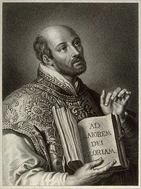

|
Origen de la compañia de jesus La Compañía de Jesús, cuyos miembros son comúnmente conocidos como jesuitas, es una orden religiosa de la Iglesia católica fundada en 1540 por San Ignacio de Loyola, junto con San Francisco Javier., el Beato Pdro Fabro, Diego lainez. Alfonso Salmerón, Nicolás de Bobadilla, Simon Rodrigues, Juan Coduri, Pascasio Broët y Claudio Jayo en la ciudad de Roma, siendo aprobada por el Papa Pablo III.  |